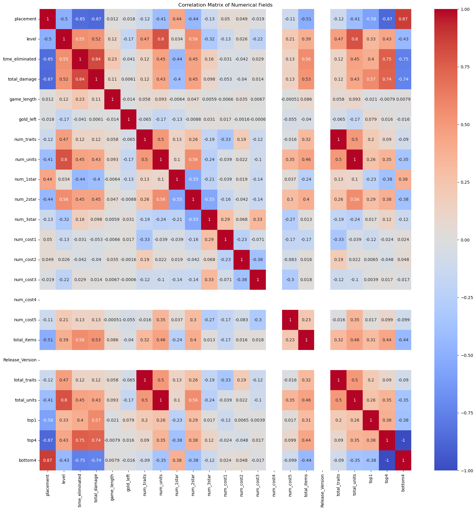
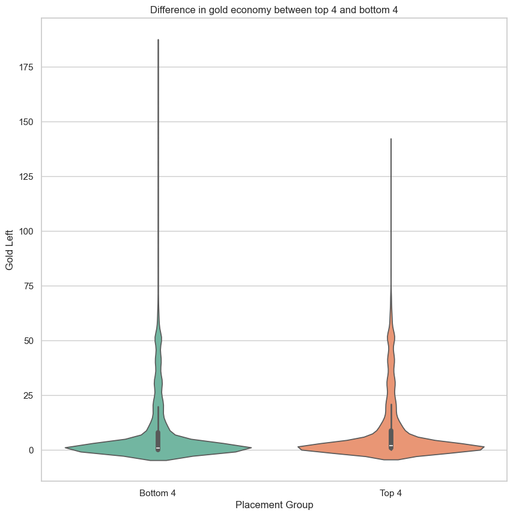
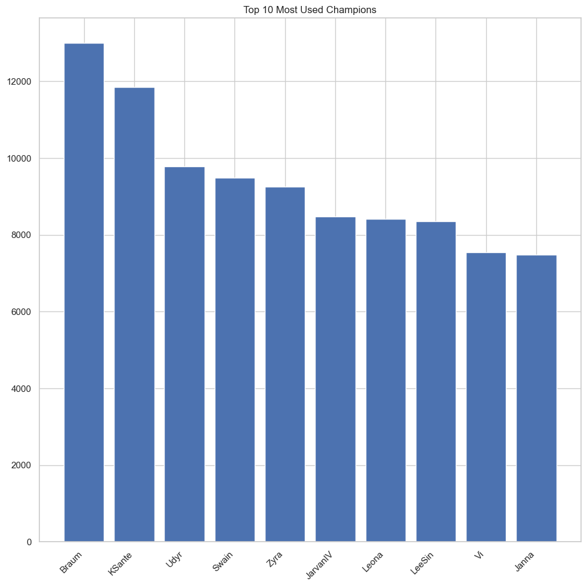

#import packages this file uses
import os
import re
import numpy as np
import pandas as pd
import matplotlib.pyplot as plt
import seaborn as sns
import ast
import itertools
from collections import Counter
from scipy import statsExploratory Data Analysis
#Introduction
This analyses performs basic EDA to provide a high level picture of the cleaned TFT dataset. First, I am only looking at Version 15.22. Different game versions have balance patches which can affect gameplay in major ways.
This EDA begins with a basic info and descriptive statistics of the int and float fields. Then a histogram was made to get a general view of the distributions.The results of this showed some high degree of bias so the skew and kurtosis was taken. num_3star, num_cost3, 2.258098, 3.439884 had skew > 1. For kurtosis, game_length = 29 and gold_left = 12. Based on these results, gold_left was an incredibly biased varaible i needed to consider when performing supervised and unsupervised learning. I also made a correlation matrix, and pairplot to see if any notable relationships among data was formed.
Finally, to get a sense of unit popularity and team comps, I created a bar chart of the top 10 most used champions and a correlation heatmap of units. The most popular units were Braum, KSante, Udyr, Swain, Zyra, JarvanIV, Leona, LeeSin, Vi, and Janna.
As for the heatmap results, there were some notable correlations in Braum + Swain, Braum + Zyra, Janna + JarvanIV. When I try to determine comps, I wouldlike to see if these champions are frequently seen or the pairings I found are present.
Code
- Introduction and Motivation: The purpose of this notebook is to perform Exploratory Data Analysis (EDA) on the processed TFT gameplay dataset. The various analytics and tests done are done as tests for potential modeling ideas.
- Overview of Methods: Ttest, Bar Graphs, Heatmaps
#Import singlar combined csv file from raw data step as a pandas df
dfTFT = pd.read_csv("../data/processed-data/TFT_processed-data.csv")#Only Use Version 15.22. Comparing versions isnt a one to one comparison
dfTFT = dfTFT[dfTFT["Release_Version"] == 15.22]#Note: top1, top4, bottom4 are all binarys.
dfTFT.info()<class 'pandas.core.frame.DataFrame'>
Index: 32455 entries, 0 to 48667
Data columns (total 31 columns):
# Column Non-Null Count Dtype
--- ------ -------------- -----
0 match_id 32455 non-null object
1 puuid 32455 non-null object
2 placement 32455 non-null int64
3 level 32455 non-null int64
4 time_eliminated 32455 non-null float64
5 total_damage 32455 non-null int64
6 game_length 32455 non-null float64
7 game_version 32455 non-null object
8 gold_left 32455 non-null int64
9 traits 32455 non-null object
10 units 32455 non-null object
11 num_traits 32455 non-null int64
12 num_units 32455 non-null int64
13 num_1star 32455 non-null int64
14 num_2star 32455 non-null int64
15 num_3star 32455 non-null int64
16 num_cost1 32455 non-null int64
17 num_cost2 32455 non-null int64
18 num_cost3 32455 non-null int64
19 num_cost4 32455 non-null int64
20 num_cost5 32455 non-null int64
21 total_items 32455 non-null int64
22 Release_Version 32455 non-null float64
23 total_traits 32455 non-null int64
24 total_units 32455 non-null int64
25 top1 32455 non-null int64
26 top4 32455 non-null int64
27 bottom4 32455 non-null int64
28 champions 32455 non-null object
29 raw_champions 32455 non-null object
30 champion_list 32455 non-null object
dtypes: float64(3), int64(20), object(8)
memory usage: 7.9+ MB#Get decriptive stats of int and float fields
dfTFT.describe(include=['int64','float64']).T| count | mean | std | min | 25% | 50% | 75% | max | |
|---|---|---|---|---|---|---|---|---|
| placement | 32455.0 | 4.497088 | 2.292538e+00 | 1.000000 | 2.000000 | 4.000000 | 6.000000 | 8.000000 |
| level | 32455.0 | 8.539670 | 8.527264e-01 | 1.000000 | 8.000000 | 9.000000 | 9.000000 | 10.000000 |
| time_eliminated | 32455.0 | 1886.681196 | 2.750301e+02 | 7.777373 | 1682.768311 | 1904.160767 | 2090.404053 | 2748.024658 |
| total_damage | 32455.0 | 95.586597 | 4.821405e+01 | 0.000000 | 59.000000 | 89.000000 | 128.000000 | 270.000000 |
| game_length | 32455.0 | 2190.228240 | 1.451466e+02 | 7.777373 | 2098.891357 | 2187.416260 | 2284.013916 | 2756.449219 |
| gold_left | 32455.0 | 8.620644 | 1.544957e+01 | 0.000000 | 0.000000 | 1.000000 | 9.000000 | 183.000000 |
| num_traits | 32455.0 | 10.354830 | 2.287158e+00 | 0.000000 | 9.000000 | 10.000000 | 12.000000 | 20.000000 |
| num_units | 32455.0 | 8.695671 | 1.048188e+00 | 0.000000 | 8.000000 | 9.000000 | 9.000000 | 13.000000 |
| num_1star | 32455.0 | 2.155754 | 1.543375e+00 | 0.000000 | 1.000000 | 2.000000 | 3.000000 | 10.000000 |
| num_2star | 32455.0 | 5.646927 | 2.119941e+00 | 0.000000 | 4.000000 | 6.000000 | 7.000000 | 12.000000 |
| num_3star | 32455.0 | 0.886489 | 1.238142e+00 | 0.000000 | 0.000000 | 0.000000 | 2.000000 | 7.000000 |
| num_cost1 | 32455.0 | 1.506979 | 8.895040e-01 | 0.000000 | 1.000000 | 2.000000 | 2.000000 | 5.000000 |
| num_cost2 | 32455.0 | 1.667971 | 7.391302e-01 | 0.000000 | 1.000000 | 2.000000 | 2.000000 | 6.000000 |
| num_cost3 | 32455.0 | 1.549037 | 1.033483e+00 | 0.000000 | 1.000000 | 1.000000 | 2.000000 | 8.000000 |
| num_cost4 | 32455.0 | 0.000000 | 0.000000e+00 | 0.000000 | 0.000000 | 0.000000 | 0.000000 | 0.000000 |
| num_cost5 | 32455.0 | 2.250932 | 1.073448e+00 | 0.000000 | 1.000000 | 2.000000 | 3.000000 | 6.000000 |
| total_items | 32455.0 | 12.385210 | 3.510498e+00 | 0.000000 | 10.000000 | 12.000000 | 14.000000 | 30.000000 |
| Release_Version | 32455.0 | 15.220000 | 1.254305e-11 | 15.220000 | 15.220000 | 15.220000 | 15.220000 | 15.220000 |
| total_traits | 32455.0 | 10.354830 | 2.287158e+00 | 0.000000 | 9.000000 | 10.000000 | 12.000000 | 20.000000 |
| total_units | 32455.0 | 8.695671 | 1.048188e+00 | 0.000000 | 8.000000 | 9.000000 | 9.000000 | 13.000000 |
| top1 | 32455.0 | 0.125682 | 3.314954e-01 | 0.000000 | 0.000000 | 0.000000 | 0.000000 | 1.000000 |
| top4 | 32455.0 | 0.500447 | 5.000075e-01 | 0.000000 | 0.000000 | 1.000000 | 1.000000 | 1.000000 |
| bottom4 | 32455.0 | 0.499553 | 5.000075e-01 | 0.000000 | 0.000000 | 0.000000 | 1.000000 | 1.000000 |
#Create Histograms of all int and float fields
num_cols = dfTFT.select_dtypes(include=['int64','float64']).columns
dfTFT[num_cols].hist(bins = 20, figsize = (12,12))
plt.tight_layout()
plt.show()
Data Distribution
#Histogram visually shows skew among a couple of fields
#Lets determine the skew of num cols
dfTFT[num_cols].skew().sort_values()game_length -2.035491
total_units -1.231842
num_units -1.231842
level -0.769241
time_eliminated -0.462091
total_traits -0.124075
num_traits -0.124075
num_cost2 -0.092288
num_2star -0.079416
num_cost5 -0.024680
top4 -0.001787
Release_Version 0.000000
num_cost4 0.000000
placement 0.000957
bottom4 0.001787
num_cost1 0.216555
total_damage 0.439562
total_items 0.513083
num_1star 0.849210
num_3star 1.298909
num_cost3 1.776404
top1 2.258501
gold_left 2.865710
dtype: float64#Look at Kurtosis
dfTFT[num_cols].kurt().sort_values()top4 -2.000120
bottom4 -2.000120
placement -1.238937
num_cost5 -0.615949
num_2star -0.486263
total_damage -0.400370
Release_Version 0.000000
num_cost4 0.000000
num_cost1 0.100252
num_traits 0.224385
total_traits 0.224385
num_cost2 0.435328
num_1star 0.770351
num_3star 0.939878
time_eliminated 1.134067
total_items 1.376238
level 2.684690
top1 3.101018
num_cost3 4.749030
num_units 7.040564
total_units 7.040564
gold_left 12.030834
game_length 29.433887
dtype: float64plt.figure(figsize=(20,20))
sns.heatmap(dfTFT[num_cols].corr(),annot = True, cmap = 'coolwarm')
plt.title("Correlation Matrix of Numerical Fields")
plt.show()
#Look at pairwise relationships
sns.set(style = "whitegrid")
sns.pairplot(dfTFT[['placement', 'level', 'total_damage', 'game_length']])
plt.show()
H0: Gold lacks a significant effect on getting first place HA: Gold has a significant effect on getting first place
#Create ttest assesing the siginfignace of gold left on first place
#Despite heavy skew, i wont normalize.
win = dfTFT[dfTFT["top1"] == 1]["gold_left"]
lose = dfTFT[dfTFT["top1"] != 1]["gold_left"]
stats.ttest_ind(win, lose, equal_var = False)TtestResult(statistic=13.296788071192763, pvalue=1.0967396807080814e-39, df=5107.305276300659)P val < .05, so we reject the null hypothesis and can conclude that gold_left is significant for placement. This informs of modeling.
#TTest indicates high statistical siginifgance.
#Lets use a violin plot top and bottom cut players without normalzaling the highly skewed variable
dfTFT["finish_group"] = dfTFT["placement"].apply(lambda x: "Top 4" if x <= 4 else "Bottom 4")
dfTFT["finish_group"].value_counts()
plt.figure(figsize = (10,10))
sns.violinplot(data = dfTFT, x = "finish_group", y = "gold_left" , palette = "Set2")
plt.title("Difference in gold economy between top 4 and bottom 4", fontsize = 12)
plt.xlabel("Placement Group", fontsize = 12)
plt.ylabel("Gold Left", fontsize = 12)
plt.tight_layout
plt.show()/var/folders/6s/cxp6j6zd22s3tgzn53pm65900000gn/T/ipykernel_27037/3703048918.py:7: FutureWarning:
Passing `palette` without assigning `hue` is deprecated and will be removed in v0.14.0. Assign the `x` variable to `hue` and set `legend=False` for the same effect.
sns.violinplot(data = dfTFT, x = "finish_group", y = "gold_left" , palette = "Set2")
#Only use 15.22. This build of game only matters for these 2 visuals
dfTFT["champion_list"] = dfTFT["champion_list"].apply(ast.literal_eval)
counter = Counter()
for lst in dfTFT['champion_list']:
counter.update(lst)
top = counter.most_common(10)
names = [x[0] for x in top]
counts = [x[1] for x in top]
plt.figure(figsize=(10,10))
plt.bar(names, counts)
plt.xticks(rotation=45, ha='right')
plt.title("Top 10 Most Used Champions")
plt.tight_layout()
plt.show()
champions = sorted({c for row in dfTFT["champion_list"] for c in row})
matrix = pd.DataFrame(0, index = champions, columns = champions)
for champs in dfTFT["champion_list"]:
for c1, c2 in itertools.combinations(champs, 2):
matrix.loc[c1, c2] += 1
matrix.loc[c2, c1] += 1
for c in champions:
matrix.loc[c, c] = dfTFT["champion_list"].apply(lambda x: c in x).sum()
print("Champion Co-occurrence Matrix:")
print(matrix)Champion Co-occurrence Matrix:
Aatrox Ahri Akali Ashe Braum Caitlyn Darius DrMundo Ezreal \
Aatrox 7023 23 1406 273 969 11 2972 1574 37
Ahri 23 729 3 23 157 0 17 8 7
Akali 1406 3 1975 12 38 7 1711 27 113
Ashe 273 23 12 4894 3030 1 29 407 3
Braum 969 157 38 3030 12614 42 63 3664 203
... ... ... ... ... ... ... ... ... ...
Yone 734 7 28 43 593 0 22 243 1
Yuumi 107 6 113 5 297 499 229 2 3862
Zac 2444 6 350 18 140 10 2861 261 61
Ziggs 265 2 20 66 403 8 16 10 8
Zyra 1108 46 98 3716 6918 12 260 2946 186
Gangplank ... Viego Volibear Xayah XinZhao Yasuo Yone Yuumi \
Aatrox 894 ... 150 695 25 46 378 734 107
Ahri 7 ... 1 19 217 47 17 7 6
Akali 29 ... 11 18 4 10 78 28 113
Ashe 228 ... 230 113 2 48 9 43 5
Braum 53 ... 527 2881 1184 3700 679 593 297
... ... ... ... ... ... ... ... ... ...
Yone 616 ... 65 779 158 486 324 1546 2
Yuumi 1 ... 0 25 7 107 9 2 4291
Zac 23 ... 13 19 10 6 4 14 198
Ziggs 13 ... 3 35 1 35 23 12 8
Zyra 81 ... 105 712 126 1519 129 203 231
Zac Ziggs Zyra
Aatrox 2444 265 1108
Ahri 6 2 46
Akali 350 20 98
Ashe 18 66 3716
Braum 140 403 6918
... ... ... ...
Yone 14 12 203
Yuumi 198 8 231
Zac 3613 1 339
Ziggs 1 1549 144
Zyra 339 144 9162
[63 rows x 63 columns]plt.figure(figsize = (18, 14))
sns.heatmap(matrix, cmap = "Reds", square = True, cbar = True)
plt.title("Champion Co-occurrence Heatmap")
plt.tight_layout()
plt.show()